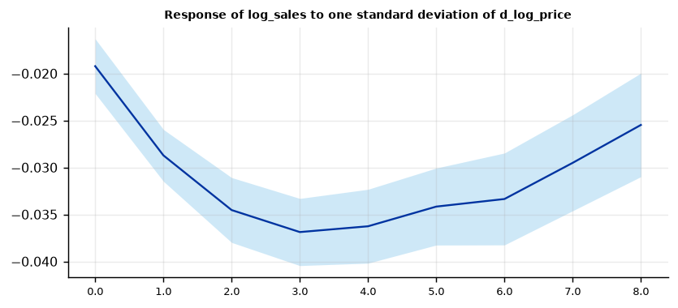

Run this model on your own data in Open Econometric Systems →
Step 1The question and the model
How does the outcome of a unit evolve after a shock to that unit? For each horizon \(h = 0, 1, \dots, H\) the panel local projection estimates
where \(\alpha_{i,h}\) is a unit effect, \(\delta_{t,h}\) is an optional time effect, \(s_{i,t}\) is the shock and \(x_{i,t}\) holds the controls (lags of the outcome, of the shock and of other variables, and any variables ordered before the shock). The coefficient \(\beta_h\) is the impulse response at horizon \(h\). Because every horizon is a separate fixed-effects regression, the method is robust to misspecification of the dynamics and does not require a balanced panel.
Four checks before you trust a panel local projection
- Is the shock plausibly exogenous to the unit's own outcome? The shock should be a change that is not driven by anticipated changes in the outcome (a tax change, a policy reform, an external shock). A price that responds to expected demand is not a shock.
- Which effects? Unit effects remove permanent differences between units. Time effects also remove everything common to all units in a period, so the response is identified from differences across units only, and the average effect of a common shock is lost.
- Which standard errors? The horizon-\(h\) errors overlap across horizons and are correlated within a unit, so cluster by unit. If shocks hit all units at once, errors are also correlated across units, and Driscoll-Kraay errors (which need a long time dimension) or time effects are needed.
- Is T large enough? With unit effects and lagged outcomes among the controls, a short panel has Nickell bias. Check that the response is stable to the number of lags.
How to write it: the model
We estimate the dynamic effect of a cigarette-price increase on sales with panel local projections (Jordà 2005). For each horizon \(h = 0, \dots, 8\) years we regress log per-capita sales at \(t+h\) on the change in the log real price at \(t\), on the contemporaneous change in log income, on two lags of the price change, of income growth and of log sales, and on state fixed effects. The price change is scaled to one standard deviation. Standard errors are clustered by state.
Step 2Load the panel and check its structure
import numpy as np
import pandas as pd
import oes_engine as oes # pip install -e open-econometric-systems/oes-engine
from statsmodels.tsa.stattools import adfuller
data = open("cigar.csv").read()
df = pd.read_csv("cigar.csv").sort_values(["state", "year"])
df["d_log_price"] = df.groupby("state").log_price.diff()
print(f"{df.state.nunique()} states, {df.year.min()}-{df.year.max()}, observations per state: {sorted(df.groupby('state').size().unique())}")
print(df[["log_sales", "log_price", "log_income", "d_log_price"]].describe().round(3).loc[["mean", "std", "min", "max"]])
share = lambda s: np.mean([adfuller(g.dropna(), maxlag=2, autolag=None)[1] < .05 for _, g in df.groupby("state")[s]])
print({c: round(share(c), 2) for c in ["log_sales", "log_price", "d_log_price"]})46 states, 63-92, observations per state: [np.int64(30)]
log_sales log_price log_income d_log_price
mean 4.793 -0.106 4.545 0.011
std 0.225 0.152 0.210 0.060
min 3.978 -0.610 3.766 -0.117
max 5.697 0.364 5.117 0.268
{'log_sales': np.float64(0.0), 'log_price': np.float64(0.0), 'd_log_price': np.float64(0.13)}How to read it
The panel is balanced: 46 states observed for 30 years (1963-92). Log sales and log price are persistent, so the shock used is the one-year change in log price (d_log_price, mean 0.011, s.d. 0.060). The per-state unit-root test rejects a unit root in none of the states for the levels and in only 13% for the change, but with 30 years per state and two lags the test has little power, so treat it as a warning about persistence, not proof. Because every state has all 30 years, no grid gaps need filling.
Step 3Estimate the impulse response
ops = [dict(op="diff", vars=["log_price", "log_income"], unit="state", time="year")]
spec = dict(y="log_sales", shock="d_log_price", contemp=["d_log_income"], unit="state", time="year",
lags=2, horizon=8, effects="unit", cov="clustered", scale="sd", ops=ops)
r = oes.run("plp", data, spec)
oes.summary(r)
oes.show(r, "Impulse response")
oes.plot(r, "Response of log_sales", ncols=1, size=(6.5, 3))Observations (h = 0): 1242
Units: 46
Periods: 30
Horizons: 8
Lags: 2
Peak response: -0.0369
Peak horizon: 3
Fixed effects: Unit
Impulse response by horizon
Response Std. err. p-value 95% CI low 95% CI high Obs.
Horizon
0 -0.0192 0.0015 0.0 -0.0221 -0.0163 1242
1 -0.0287 0.0014 0.0 -0.0315 -0.0260 1196
2 -0.0345 0.0018 0.0 -0.0380 -0.0311 1150
3 -0.0369 0.0018 0.0 -0.0404 -0.0333 1104
4 -0.0363 0.0020 0.0 -0.0402 -0.0323 1058
5 -0.0342 0.0021 0.0 -0.0383 -0.0301 1012
6 -0.0334 0.0025 0.0 -0.0382 -0.0285 966
7 -0.0295 0.0026 0.0 -0.0346 -0.0244 920
8 -0.0255 0.0028 0.0 -0.0310 -0.0200 874
Note: Response of log_sales to one standard deviation of the shock. Outcome: log_sales(t+h). Each row is a separate regression. Standard errors: clustered by unit.
How to read it
Each row is a separate regression of log sales at t+h on the price shock, with state effects, two lags and the contemporaneous income change, scaled to a one-standard-deviation shock. Sales fall by 1.9% on impact (-0.0192, s.e. 0.0015), the response deepens to a peak of -0.0369 at horizon 3, and decays to -0.0255 by horizon 8. Every horizon is significant at 1%, and the 95% band stays well away from zero. The observation count drops from 1,242 to 874 as the horizon grows because later outcomes need more future years.
Step 4Choose the effects: pooled, unit or unit and time
cmp = {}
for name, eff in {"pooled": "none", "unit effects": "unit", "unit and time effects": "twoway"}.items():
rows = oes.run("plp", data, dict(spec, effects=eff))["tables"][0]["rows"]
cmp[name] = [rows[h][1] for h in range(9)]
print(pd.DataFrame(cmp, index=pd.Index(range(9), name="horizon")).loc[[0, 1, 2, 4, 6, 8]].round(4))pooled unit effects unit and time effects horizon 0 -0.0191 -0.0192 -0.0227 1 -0.0290 -0.0287 -0.0228 2 -0.0348 -0.0345 -0.0238 4 -0.0382 -0.0363 -0.0180 6 -0.0386 -0.0334 -0.0136 8 -0.0332 -0.0255 -0.0080
How to read it
The effects choice matters for the shape. Pooled and unit-effects responses are almost identical (about -0.036 at horizon 4), so state-level differences in average sales do not drive the result. Adding year effects shrinks the response (-0.018 at horizon 4, -0.008 at horizon 8) because common national shocks, such as federal tax changes and health campaigns, move prices and sales together. Report which comparison you mean: unit effects give the within-state response to a price change; two-way effects give the response relative to other states in the same year.
Step 5Standard errors: clustered or Driscoll-Kraay
se = {}
for name, v in {"clustered by state": dict(cov="clustered"), "Driscoll-Kraay": dict(cov="dk")}.items():
rows = oes.run("plp", data, dict(spec, **v))["tables"][0]["rows"]
se[name] = [rows[h][2] for h in range(9)]
print(pd.DataFrame(se, index=pd.Index(range(9), name="horizon")).loc[[0, 1, 2, 4, 6, 8]].round(4))clustered by state Driscoll-Kraay horizon 0 0.0015 0.0030 1 0.0014 0.0029 2 0.0018 0.0037 4 0.0020 0.0081 6 0.0025 0.0122 8 0.0028 0.0185
How to read it
Driscoll-Kraay errors are two to six times larger than clustered errors and grow with the horizon (0.0081 versus 0.0020 at horizon 4, 0.0185 versus 0.0028 at horizon 8). Clustering by state allows arbitrary serial correlation within a state but assumes states are independent; Driscoll-Kraay also allows common shocks across states, which matters here because the years are shared. With only 30 periods, the Driscoll-Kraay errors are the more cautious choice; the response stays significantly negative through horizon 8 under both.
Step 6Robustness: lags, outcome, controls and leave-one-state-out
variants = {"baseline (2 lags)": {}, "1 lag": dict(lags=1), "4 lags": dict(lags=4), "no income control": dict(contemp=[]),
"outcome: change since t-1": dict(outcome="diff"), "Driscoll-Kraay errors": dict(cov="dk")}
out = {}
for name, v in variants.items():
rows = oes.run("plp", data, dict(spec, **v))["tables"][0]["rows"]
out[name] = [rows[0][1], rows[4][1], rows[4][2], rows[8][1]]
print(pd.DataFrame(out, index=["h=0", "h=4", "s.e. h=4", "h=8"]).T.round(4))
loo = []
for s in df.state.unique():
r_s = oes.run("plp", df[df.state != s], dict(spec, ops=ops))
loo.append(r_s["tables"][0]["rows"][4][1])
print(f"Leave-one-state-out response at h=4: min {min(loo):.4f}, max {max(loo):.4f} (all 46 negative: {all(v < 0 for v in loo)})")h=0 h=4 s.e. h=4 h=8 baseline (2 lags) -0.0192 -0.0363 0.0020 -0.0255 1 lag -0.0197 -0.0391 0.0023 -0.0316 4 lags -0.0185 -0.0341 0.0024 -0.0082 no income control -0.0177 -0.0332 0.0024 -0.0274 outcome: change since t-1 -0.0192 -0.0363 0.0020 -0.0255 Driscoll-Kraay errors -0.0192 -0.0363 0.0081 -0.0255 Leave-one-state-out response at h=4: min -0.0369, max -0.0357 (all 46 negative: True)
How to read it
The impact and peak responses barely move: -0.018 to -0.020 at horizon 0 and -0.033 to -0.039 at horizon 4 across one lag, four lags and no income control. The far horizon is less stable (-0.008 with four lags against -0.032 with one), so quote the horizon 8 value with care. The change-since-t-1 outcome matches the baseline exactly because the regression includes a lag of the outcome, as expected. Dropping any one state leaves the horizon 4 response between -0.0369 and -0.0357, and all 46 runs are negative, so no single state drives it.
Step 7Write the results
How to write it: results
A one-standard-deviation increase in the annual change in log cigarette price (about 6 percentage points) lowers per-capita sales by 1.9% on impact. The response grows to a peak of 3.7% after three years (95% CI -4.0% to -3.3%, state-clustered) and is still 2.6% below its starting path after eight years. The estimates use local projections with state fixed effects, two lags of sales and the price change, and a contemporaneous income control. The impact and peak responses are stable across lag length, outcome definition and leave-one-state-out checks. Driscoll-Kraay standard errors are larger but the response remains significant through horizon 8. With year effects the response is smaller (1.8% at horizon 4), so the result partly reflects national co-movement of prices and sales. With T = 30 and lagged outcomes among the regressors, fixed-effect estimates carry a small Nickell-type bias.
| Report | What | Where |
|---|---|---|
| Model | Shock, outcome, controls, effects, lags, horizon, standard errors | Step 1 |
| Data | Panel structure, unit-root checks | Step 2 |
| Estimates | Impulse response table and figure with 95% bands | Step 3 |
| Effects | Pooled, unit and two-way effects | Step 4 |
| Standard errors | Clustered versus Driscoll-Kraay | Step 5 |
| Robustness | Lags, outcome, controls, leave-one-unit-out | Step 6 |
References. Jordà (2005), American Economic Review; Jordà, Schularick and Taylor (2015), Journal of International Economics; Nickell (1981), Econometrica; Driscoll and Kraay (1998), Review of Economics and Statistics; Montiel Olea and Plagborg-Møller (2021), Econometrica; Baltagi, Griffin and Xiong (2000), Review of Economics and Statistics.